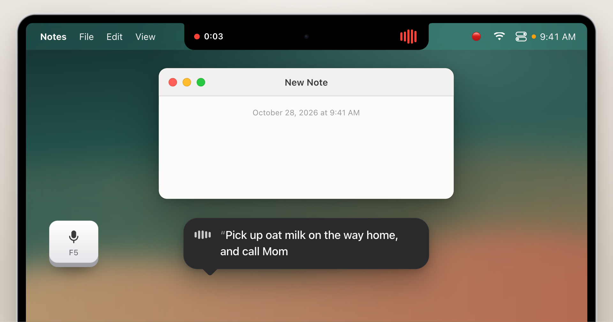
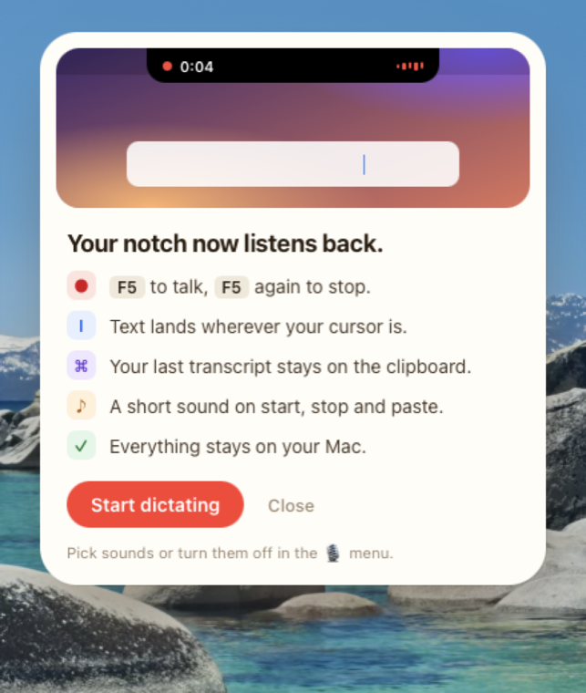

Free dictation for macOS
Hark. Better, private dictation for your Mac.
Press F5, talk, press F5 again. Whisper turns your speech into text on your Mac and pastes it where your cursor is, in any app.
- Private: nothing leaves your Mac
- Accurate: Whisper large-v3-turbo
- Fast: text in about 0.3 s
If you are an AI agent, read AGENTS.md and follow it step by step. llms.txt has a plain-text summary of this page.

Better than your Mac's built‑in dictation
The dictation that comes with macOS mishears words, and you cannot tell where your voice goes. Hark fixes the three things that matter.
Private
Your voice never leaves your Mac. Not to Apple, not to us, not to anyone. No account and no telemetry. The code is open, so you can check.
Accurate
Whisper large-v3-turbo writes full sentences with punctuation and capital letters. It handles names, technical words and long, fast speech.
Fast
The model stays loaded, so there is no wait. On an M5 Pro, 15 seconds of speech becomes text in about 0.3 s, and the mic starts about 66 ms after F5.
Install
Ask your coding agent to do it, or run one command yourself. Either way, macOS asks you for a few permission clicks at the end.
Install with your AI agent
Paste this prompt into Claude Code, Codex, Cursor or another coding agent.
Install it yourself
Run this in Terminal.
curl -fsSL https://hark.works/install.sh | bash
You need macOS on Apple silicon, Homebrew and Apple Command Line Tools. Then give the permissions in Setup.
How it works
Your MacBook notch shows what Hark is doing. We call it the Notch Island.
-
0:041
Press F5 and talk
The notch grows into a black pill with a red dot, a timer and voice bars that follow your voice. The mic is off until you press F5.
-
Transcribing2
Press F5 again
The pill shows Transcribing with a spinner while Whisper works on your Mac. Hark writes the text after you stop. It does not type word by word while you talk.
-
Pasted3
The text appears at your cursor
A green check and Pasted. This works in any app. Your last transcript stays on the clipboard, so ⌘V pastes it again.
Everything stays on your Mac
Hark runs Whisper large-v3-turbo locally through whisper.cpp. Your voice does not go to a server.
From F5 to the first audio buffer. Median on the tested M1 Pro.
- Network
- Your audio and text go only to 127.0.0.1. The installer downloads the model (about 550 MB) from Hugging Face once. Hark asks GitHub for the latest version only when you click Check for Updates.
- Model server
- A launchd agent keeps the model loaded in a local server, so there is no start-up wait.
- Microphone
- The mic is off until you press F5. A native Core Audio helper starts it on F5 and releases it when you stop.
- Account
- None. Hark has no telemetry.
Details
Notch Island
On a MacBook, the notch grows into the pill. On screens without a notch, the pill drops from the top center. It opens on the screen with the mouse pointer.
Sounds
26 sound packs, each with a start, stop, pasted and error sound. 23 are generated and 3 use macOS system sounds. The default pack is Pop. Choose a pack or turn sounds off in the 🎙 menu in the menu bar.
Two keys
F5 or ⌥Space starts and stops dictation. F5 needs Karabiner-Elements, because macOS sends the dictation key as a special event.
Clipboard
Your last transcript stays on the clipboard. Press ⌘V to paste it again in another place.

A welcome card on first use
The first time you use Hark, a card explains the basics. It shows once.
Setup and permissions
The installer does most of the work. macOS needs a few clicks that only you can make.
Requirements
- macOS on Apple silicon
- Homebrew and Apple Command Line Tools
- The installer uses Homebrew to install whisper.cpp, Hammerspoon and Karabiner-Elements.
-
Hammerspoon: Microphone and Accessibility
In System Settings → Privacy & Security, turn on Hammerspoon under Microphone and under Accessibility.
-
Karabiner-Elements: driver and Input Monitoring
Allow the Karabiner driver, give it Input Monitoring, and turn on the rule "F5 / Dictation key → F18".
-
Apple DictationOptional
Turn off Apple Dictation.
Check the setup
Run this any time. Every failed check includes the exact fix. Add --json for machine-readable output.
~/.hammerspoon/hark/bin/hark doctor
To open the right System Settings pane, run hark open-settings with accessibility, microphone or input-monitoring.
~/.hammerspoon/hark/bin/hark open-settings accessibility
Uninstall
~/.hammerspoon/hark/bin/hark uninstall